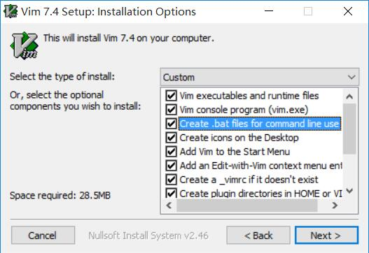
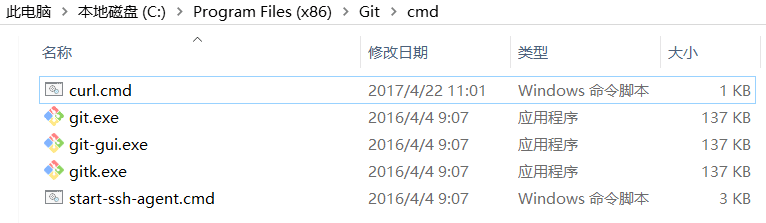

本文针对 Windows 平台下 Vim 和 spf13-vim 的安装进行详细的讲解。
聊聊 vim 的安装
在 Windows 平台上安装 Vim 比在 Linux, Unix 和 OS X 平台上要困难得多。
或许我们用 Windows 系统的人都是在玩游戏，用别的系统的人都是在写代码。
总结了下我在安装过程中遇到了若干问题，希望对新手有所帮助。
安装需求
- Vim
- Git for windows
- Curl （Git 自带）
- Lua DLL
- 畅通的网络和足够的耐心。
预备知识
阅读正式内容前，你应该知道：
软件编译版本分为 32 和 64 位，这在下载软件时经常会遇到。通常情况下：
- 以
x86代表 32 位软件，其默认安装目录是C:\Program Files (x86)\ - 以
x64代表 64 位软件，其默认安装目录是C:\Program Files\
Vim 和 Git 安装 32 位或 64 位均可，默认安装目录的区别。
Vim
下载
Vim 官网 下载奇慢，请在 中科大的开源镜像站 下载 gVim74。
根据 Vim - Wikia 上的介绍，这两个下载地址也不错：
- Vim without Cream 提供 32 位和 64 位稳定版的 Vim，Window 平台 Vim 的最佳选择
- Vim-win32-installer Github 上最新版本的 Vim (每夜版)
安装
安装时需要勾选 Create .bat files for command line use，如下图所示：

其他使用默认选项即可。
spf13-vim
安装
spf13-vim 是极其有名的 Vim 配置和插件集，集舒适的配色和强大的功能于一身。
Vim 号称宇宙最强 IDE，安装上 spf13-vim 可以让你快速体验一番。
安装 git 工具。
官网地址是 git for windows 。
网络很差的同学，也可以在这个 百度云链接 下载安装。配置 curl 功能。
刚刚安装的 git 带有 curl 功能，主要用来下载所需要的 Vim 插件。
配置方法: 将 curl.cmd 这个文件复制到git安装目录的cmd文件夹中。如下图所示：
检查安装需求。按下
Win 键 + R输入cmd来打开控制台，依次输入vim --version git --version curl --version来检查是否满足安装要求。如果没有报错，请进行下一步。
运行安装脚本。
保存 spf13-vim-windows-install.cmd 并 以管理员身份运行。
耐心等待，整个过程需要 10 分钟的时间。控制台窗口关闭代表安装完成。
介绍本地 vimrc 文件
vimrc 是 vim 的配置文件，有系统配置文件和用户配置文件两种。
- 系统配置文件 以
_vimrc的文件名放在$Vim目录下。（Vim 安装目录） - 用户配置文件 以
_vimrc的文件名放在$HOME目录下。（用户目录，比如C:\User\xxxx）
以上两个位置可以通过在 vim 中输入 :echo $vim 和 :echo $home 来查看。
用户配置会覆盖系统配置文件中的相同配置。
而安装 spf13-vim 后，我们拥有了一个庞大和优秀的 用户配置文件，位置在 $home 目录下。
可以通过输入命令 :e ~/.vimrc 来查看。
通常我们不会直接修改这个配置文件，而是修改名为 .vimrc.local 的用户配置。
打开方法是输入命令 :e ~/.vimrc.local。
类似于上面的情况，.vimrc.local 中的配置会覆盖掉 .vimrc 中的配置。
设置字体大小
输入命令 :set guifont=Consolas:h14，可以将字体设置到 14 号（默认为 10）
也可以将下一行带添加到 .vimrc.local 中
set guifont=Consolas:h14正确配置 NeoComplete
NeoComplete 是 Vim 中一款强大的代码自动补全插件，其运行需要 lua 环境。
找到正确版本的 lua 动态链接库（DLL 文件）非常重要！
- 确定需要的 lua 版本。输入命令
:lua print('poi')。
没有安装 lua 环境时，会提示对应的 lua 版本，比如 lua5.1 / 5.2 / 5.3。 - 在 Lua Binaries 中下载对应版本的 dll 文件。
方便起见，我把常用的三个版本的 下载链接 放在这里。 - 将下载好的 dll 改名为
lua51.dll（其他版本同理），放在 vim 的安装目录中，注意要与gvim.exe同目录。 - 输入命令
:echo has('lua')，返回 1 表示安装成功，NeoCompelte 可以正常使用了。
关闭拼写检查
打开和关闭拼写检查可以使用命令：
:set nospell关闭:set spell打开
要永久关闭拼写检查，将下一行代码添加到 .vimrc.local 中
autocmd VimEnter * set nospell接下来
开始你自己的折腾之旅吧！